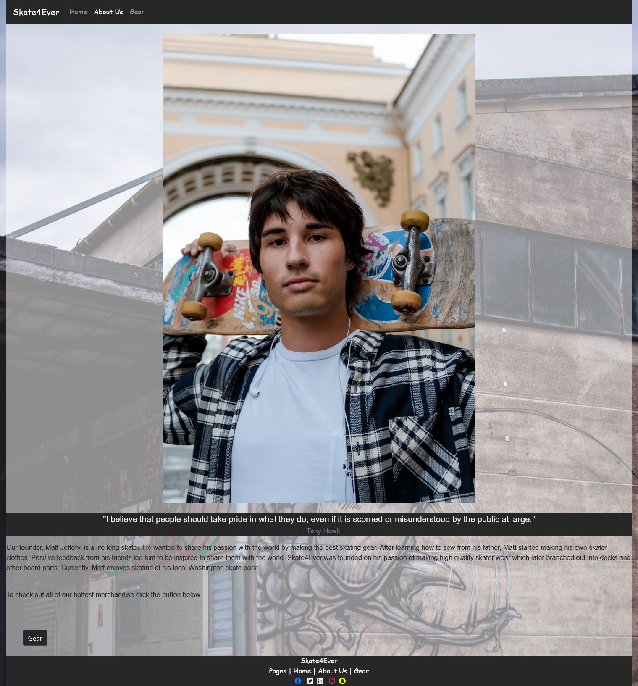

BACK
Skateboard Webiste Article
The main goal of my skateboard project was to appeal to a youthful target market of skateboarding brands. I purposely chose the more industrial look to mesh with the aesthetic of most skateparks. The font selection was based on a more artistic graffiti-inspired appearance that went well with the industrial aesthetic. The general prose font was selected as a sans-serif style to improve legibility.
My design of the homepage centered on offering a welcoming look into what is offered. A carousel was used to showcase popular products so visitors would see them first. The body text gave some basic information on the brand and its goods and services. The subheader served to offer a transition from imagery to text.
The design of the about us page centered on drawing attention to the founder along highlighting his story and principles. A similar layout akin to the home page was used. Additionally, a button was included that allows visitors to buy after learning more about the company and its founder.
The gear/products page was made to appeal to the target market. This goal was achieved by utilizing bright and vibrant colors, along with flashy images and minimal text to make the gear the centerpiece.
The skater site was an earlier project of mine. It ultimately allowed me to learn more about implementing bootstrap into a website to add features. It is not as polished as my later works, but I shared it as I feel it does still have a comprehensive and pleasant design along with serving as a good learning experience for me.